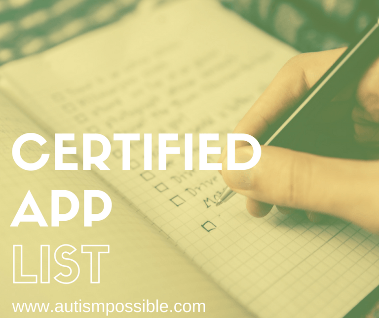

Hi, I am Dr. Teresa Vasquez, but you can call me Dr. T!
I’m here to help you Embrace Your Mission and live a Cape Wearing life. My mission is to help adult learners use the power of technology to EMBRACE THEIR MISSIONS! I wear a lot of hats! I am a developer, educator and mama. On this website, I highlight the work I am doing and how I can help you achieve your goals.
I’m here to support every adult learner in their unique mission and journey. Ultimately, I would love to see you gain the knowledge, ability, and desire to accomplish your goals and do so with the greatest of success. Because when one of us is successful, we all win.
My main goal is to make sure that you know that YOU ARE NOT ALONE! I hope to give you access to the best resources and information regarding tech, learning, and personal development. In a nutshell, I’ve done a lot of the hard work for you so that you can focus on the important stuff in your life…like embracing your mission!
Links to Valuable Resources and Stuff I like
Every now and then I surprise myself and make some really cool shiznit or find something that is equally as cool. When I do, I want to share it with you, so here is a list I have compiled along with a little info in case you want to check the resource out.
- The Autsim Possible Podcast - One of the things I am most passionate about is autism, which includes autistic people and the autism community. So much in fact, I have created a podcast all about how to use technology to make life super! If you are a member of the community or know someone who is, this podcast is the perfect mix of information and humor. Check it out!
- Dr. T's Tech Recommendations - I often get asked how I am able to so much in so little time. Technology can help to do the rote tasks that we do everyday so, I created a list of hardware that I use and recommend. Here is that list.
- Get Shit Done with Gary Vee - I read A LOT of books, blogs, and listen to tons of podcasts, but nothing gets my butt in gear like Gary Vee. He is simplistic in his approach to helping getting your ass in gear to be great. I mean honestly, cape wearing ain't for everybody, but it can be for you if you are willing to put in the work. Every day can be a challenge. If you need some motivation, Gary Vee is your guy! He mostly talks about building wealth, but the message is good for anything. You just fill in your blank.
Other Websites I Frequent
Future Projects and Cool Shiznit
Evidence-Based Practice (EBP) App Finder

The EBP App Finder will give you the data and information you need to help make informed decisions regarding app use, evidence-based practices, and IEP goals. These assessments are used to pinpoint specific iOS and andriod apps that will help you meet the goals established for your superhero.
F-Cubed: Finances, Food, Fun
This future app will be the personal assistant that you can't live without. Can you imagine having technology help to simplify the main three stressors for adulting: finances, food, and fun. You can have fun and still save while enjoying the freedom to live life on your own terms!